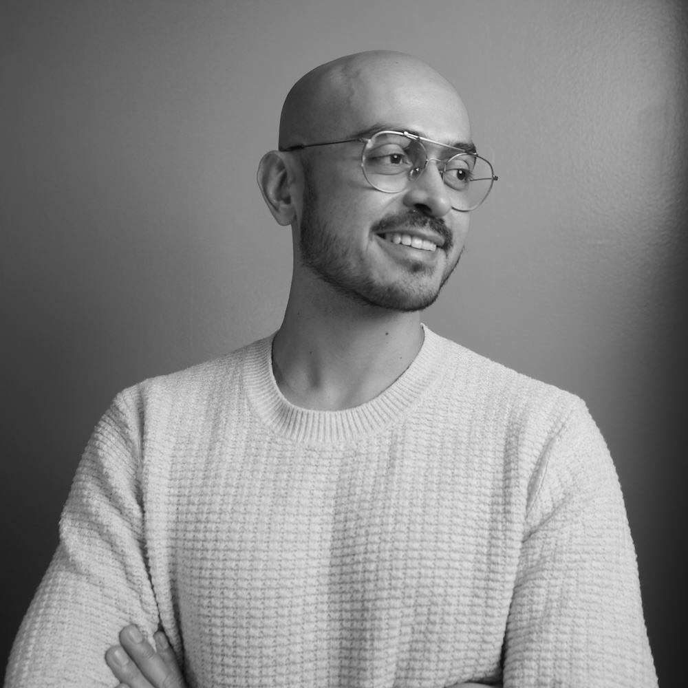

¿Quiénes somos?
CasaFaro es un laboratorio interdisciplinario de ideas y acción que trabaja desde una ecología del cuidado.
Trabajamos para develar y prevenir violencias, reparar daños, fortalecer vínculos y construir condiciones de participación, confianza, sostenibilidad y paz.
Integramos investigación, innovación social y trabajo territorial con sensibilidad al trauma y rigor metodológico para acompañar contextos complejos y de alta vulnerabilidad.
Experiencia en organismos internacionales como la ONU, la OEA y la CISS.
Estudios y formación en Harvard, UCL y la Erasmus Rotterdam.
Experiencia docente en universidades líderes de México.
Lidera el trabajo de CasaFaro en materia de política pública y justicia social, acompañando a instituciones a traducir el conocimiento en condiciones reales de equidad, participación y paz.

Dirige las líneas de bienestar y salud mental de CasaFaro, con sensibilidad al trauma y enfoque en la reparación de vínculos y la construcción de entornos laborales más sanos.
Encabeza el área de tecnología y sociedad de CasaFaro, conectando ciencia y tecnologías con el fortalecimiento de comunidades e instituciones más humanas y sostenibles.
Conoce cómo acompañamos a empresas, organizaciones sociales e instituciones públicas.
Qué hacemos Hablemos